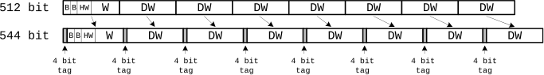

⇡ lowRISC tagged memory tutorial
Tagged memory support
Tagged memory support
Tagged memory associates metadata with each memory location and can be used to implement fine-grained memory access restrictions. Attacks which hijack control flow can be prevented by using this protection to restrict writes to memory locations containing return addresses, function pointers, and vtable pointers [1].
The implementation of tagged memory presented here provides only basic
support by extending on-chip caches to hold tags and by adding a tag
cache. Instruction set support is provided for testing in the form of
load and store tag (ltag, stag) instructions. Future releases will
add hardware support for particular security policies (e.g.
generating an exception upon modifying data tagged as read-only) and
Linux kernel support.
The tagged memory extensions add a configurable number of tag bits to each 64-bit double word. The size of the L1 data arrays is increased to accommodate the additional tag bits, i.e for 4-bit tags the cache line size increases from 512-bits to 544-bits (+6.5%):

Tags must also be associated with data in main memory. For this implementation tags are stored in a reserved area of physical memory (rather than attempting to use ECC bits to store tags). In order to minimise the performance and memory traffic overheads associated with tags a tag cache is added to the baseline Rocket chip SoC:

The tag cache also performs the role of the original TileLink/MemIO converter, converting TileLink transactions to memory transactions (MemIO). Multiple trackers are provided to allow multiple memory requests to be served in parallel.
Tag cache parameters
| Description | Parameter Name | Default Value | Possible Value |
|---|---|---|---|
| No. of tag bits | TagBits | 4 | >0, <=8 |
| log2(Size of tag partition) | TagMemSize | 24 | [22..25] |
| Base address of tag partition | TagBaseAddr | 0x0F000000 | |
| No. of ways in tag cache | TagCacheWays | 8 | >0, power of 2 |
| No. of sets in tag cache | TagCacheSets | 64 | >0, power of 2 |
| No. of trackers | TagCacheTrackers | 1 | >0 |
The maximum number of tag bits per 64-bit double word currently supported is 8.
| No. of tag bits | Size of tag partition | Base address of partition |
|---|---|---|
| 1 | 4MB (2^22) | 0x0FC00000 |
| 2 | 8MB (2^23) | 0x0F800000 |
| 4 | 16MB (2^24) | 0x0F000000 |
| 8 | 32MB (2^25) | 0x0E000000 |
The number of tag bits does not need to be a power of two, although the size of the tag partition must be a power of 2, e.g. if 6 tag bits are required a 32MB tag partition should be specified (rather than a 24MB one).
If a 32MB tag partition is required the amount of physical memory
available to the Rocket cores must be reduced to 224MB, i.e. edit the
function htif_zedboard_t::mem_mb() in
riscv-tools/riscv-fesvr/fesvr/htif_zedboard.h to return 224.
New load and store tag instructions
Two new instructions have been added to the ISA for loading and storing tags:
# rd: destination register
# rs1: 1st source resister
# imm: immediate number, address offset, 12 bits wide
# load the tag associated with DW located at rs1 + imm to register rd
ltag rd, imm(rs1)
# store the tag in rd to the DW located at rs1 + imm
stag rd, imm(rs1)
Addresses must be double word aligned otherwise a misalignment exception will be raised.
Current support for tags is limited to these simple instructions for testing. Future additions will allow both data and tag to be read atomically.
A step-by-step guide describing how hardware and software support for these new instructions was added is provided here.
Bibliography
[1] Tagged memory and minion cores in the lowRISC SoC, lowRISC-MEMO 2014-001